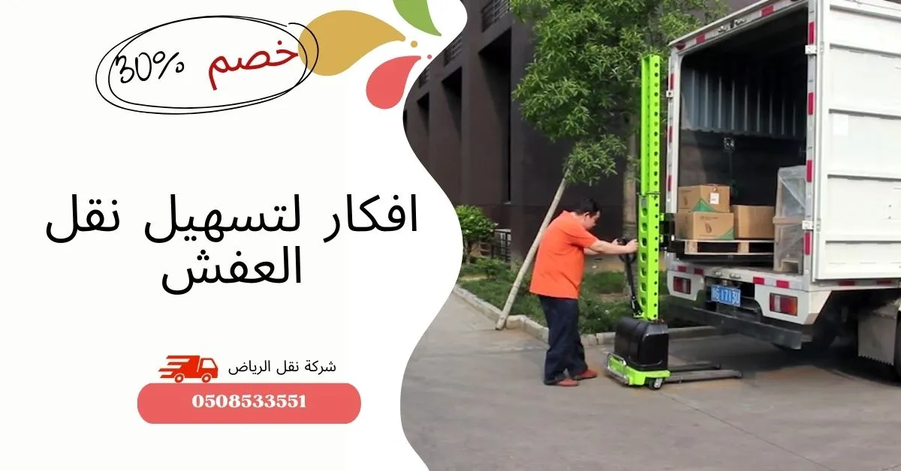

افكار لتسهيل نقل العفش

عندما نتحدث عن عملية نقل الأثاث فإن الكثير من الأشخاص يشعرون بالقلق والتوتر حيال هذه المهمة، ولكن مع وجود افكار لتسهيل نقل العفش، يمكن أن تتحول هذه العملية من عبء ثقيل إلى تجربة ممتعة وسلسة، ويتطلب الأمر فقط بعض التخطيط والتفكير المسبق، وفي هذا السياق تمثل شركة نقل الرياض دورًا محوريًا، حيث تقدم مجموعة من الخدمات التي تجعل عملية الانتقال أكثر سهولة وأمانًا، ومن خلال فهم احتياجات العملاء وتقديم الحلول المناسبة، وتسعى الشركة لتوفير تجربة نقل متميزة ومريحة.
أسهل طريقة لنقل أثاث بيتك
نقل الأثاث ليس بالأمر السهل ولكنه يصبح أكثر سهولة عندما نتبع بعض الخطوات المدروسة، وإليك بعض افكار لتسهيل نقل العفش التي يمكن أن تساعدك:
التخطيط المسبق
يعتبر التخطيط المسبق من أهم خطوات نقل الأثاث، وابدأ بتحديد الأثاث الذي ترغب في نقله وقم بعمل قائمة دقيقة بكل قطعة، وهذا لن يساعدك فقط في معرفة ما يجب نقله بل سيمكنك أيضًا من معرفة حجم الشاحنة التي تحتاجها مما يوفر الوقت والجهد.
اختيار الوقت المناسب
اختيار الوقت المناسب لنقل الأثاث له تأثير كبير على سهولة العملية، وحاول تجنب الأوقات المزدحمة مثل عطلات نهاية الأسبوع أو الإجازات، حيث تكون حركة المرور كثيفة مما قد يسبب تأخيرًا في عملية النقل.
الاستعانة بالمتخصصين
إذا كنت ترغب في جعل عملية النقل أكثر سلاسة وأمانًا فإن الاستعانة بشركة نقل محترفة تعد خيارًا مثاليًا، والمتخصصون لديهم الخبرة والأدوات اللازمة لضمان سلامة الأثاث أثناء النقل.
التعبئة الجيدة
تأكد من استخدام مواد تعبئة مناسبة، واستخدم الصناديق الفقاعية والبطانيات لحماية الأثاث من الخدوش أو الكسر، كما يُفضل وضع علامات على الصناديق لتسهيل عملية التفريغ لاحقًا.
تحديد المسارات
قبل بدء عملية نقل العفش قم بتحديد المسارات المناسبة للوصول إلى المنزل الجديد، وتأكد من أن هناك طرقًا واضحة وسلسة، وتجنب الأماكن الضيقة التي قد تسبب مشاكل أثناء تحميل الأثاث.
مساعدة الأصدقاء
لا تتردد في طلب المساعدة من الأصدقاء أو أفراد العائلة، ويمكن أن تجعل هذه المساعدة العملية أكثر سلاسة وتضيف لمسة من المرح إلى يوم النقل.
أهم أفكار لتسهيل نقل العفش
تسهيل عملية نقل العفش يتطلب بعض افكار لتسهيل نقل العفش الإبداعية التي تجعل الأمر أكثر بساطة، وإليك بعض النقاط التي يمكن أن تساعدك:
تحديد الأولويات
من الضروري تحديد الأثاث الذي تحتاجه فور وصولك إلى المنزل الجديد، وفم بعمل قائمة بالأشياء الأساسية التي ستحتاجها في الأيام الأولى لتسهيل الأمور.
استخدام التكنولوجيا
استفد من التطبيقات التي تساعدك في تنظيم قائمة المهام والمواعيد الخاصة بالنقل، وهذه التطبيقات يمكن أن تساعدك في متابعة تقدمك وضمان عدم نسيان أي شيء.
استئجار شاحنة مناسبة
تأكد من استئجار شاحنة بحجم مناسب لنقل كل الأثاث في رحلة واحدة، وهذا سيوفر لك الوقت والجهد ويقلل من الحاجة إلى القيام بعدة رحلات.
تثبيت الأثاث
استخدم حبالاً أو أحزمة لتثبيت الأثاث داخل الشاحنة، وهذا يمنع تحرك الأثاث أثناء النقل مما يحميه من الخدوش أو الأضرار.
توزيع المهام
قم بتوزيع المهام على الأصدقاء أو أفراد العائلة لجعل العملية أسرع، ويمكنك تكليف شخص بتفكيك الأثاث، وآخر بتعبئته وآخر بالتحضير للنقل.
التخزين المؤقت
إذا كنت بحاجة إلى فترة بين النقل ابحث عن شركة تخزين اثاث، وبعض الشركات توفر خدمات تخزين آمنة ومناسبة لحفظ الأثاث مثل شركتنا نقل الرياض.
شركات نقل العفش بالرياض
تعتبر الرياض مركزًا للعديد من شركات نقل العفش مما يجعل من المهم اختيار الشركة المناسبة، إليك بعض النقاط التي يجب مراعاتها عند اختيار شركة النقل والتي تعد من ضمن افكار لتسهيل نقل العفش:
- السمعة: تحقق من تقييمات العملاء وآرائهم حول الشركة، والشركات ذات السمعة الجيدة عادة ما تقدم خدمات موثوقة وتحقق رضا العملاء.
- الترخيص والتأمين: تأكد من أن الشركة مرخصة ولديها تأمين لحماية الأثاث أثناء النقل، وهذا يضمن لك الأمان ويقلل من المخاطر المحتملة.
- الأسعار: قارن الأسعار بين عدة شركات للحصول على أفضل عرض، وتأكد من فهم ما يتضمنه السعر مثل خدمات التعبئة والتغليف.
- الخدمات الإضافية: ابحث عن الشركات التي تقدم خدمات إضافية مثل التعبئة والتخزين، وهذه الخدمات يمكن أن تكون مفيدة جدًا في تسهيل عملية النقل.
- الدعم الفني: توفر بعض الشركات دعمًا فنيًا على مدار الساعة لحل أي مشاكل قد تواجهها أثناء النقل، وهذا يمكن أن يكون مفيدًا جدًا إذا حدثت أي طارئ.
- التجهيزات: تأكد من أن الشركة تستخدم معدات حديثة وآمنة أثناء النقل، وتساهم المعدات الجيدة في حماية الأثاث وتسهيل عملية النقل.
تخزين العفش في مستودعات الشركة
تقدم العديد من شركات النقل في الرياض خدمات تخزين العفش في مستودعات آمنة، إليك بعض الفوائد وافكار لتسهيل نقل العفش التي تجعل هذه الخدمة جذابة:
- الأمان: توفر المستودعات نظام أمان متكامل لحماية الأثاث، ويتضمن ذلك كاميرات مراقبة وحراسة على مدار الساعة مما يضمن أن الأثاث في مأمن طوال فترة التخزين.
- التحكم في المناخ: بعض المستودعات مجهزة للتحكم في درجة الحرارة والرطوبة مما يحافظ على الأثاث في حالة جيدة، وهذا مهم بشكل خاص للأثاث الخشبي والأشياء الحساسة التي قد تتأثر بالتغيرات الجوية.
- المرونة: يمكنك تخزين الأثاث لفترات قصيرة أو طويلة حسب احتياجاتك، وهذا يعني أنك لن تضطر إلى القلق بشأن الأثاث في حال كانت لديك فترة انتقالية طويلة.
- سهولة الوصول: العديد من المستودعات توفر إمكانية الوصول إلى الأثاث عند الحاجة، ويمكنك زيارة المستودع لاسترجاع أي قطعة تحتاجها في أي وقت.
- التأمين: توفر بعض الشركات خيارات تأمين على الأثاث المخزن مما يعطيك طمأنينة إضافية بشأن سلامة ممتلكاتك.
- المساعدة في النقل: بعض الشركات تقدم خدمات نقل الأثاث إلى المستودع وإعادته، هذا يمكن أن يوفر لك جهدًا كبيرًا وهي من ضمن افكار لتسهيل نقل العفش المميزة لكي يصل بأمان إلى وجهته.
خدمات شركة نقل الرياض
تسعى شركة نقل الرياض لتقديم مجموعة متنوعة من الخدمات لعملائها لضمان تجربة نقل سلسة، وإليك بعض الخدمات التي تقدمها:
خدمات التعبئة والتغليف
توفر الشركة مواد تعبئة احترافية لحماية الأثاث، وتشمل ايضاً افكار لتسهيل نقل العفش مثل استخدام صناديق مختارة بعناية ومواد عازلة لحماية القطع الأكثر حساسية واسرار اساليب تغليف الزجاج للنقل.
النقل المحلي والدولي
تقدم خدمات النقل داخل الرياض وخارجها، و إذا كنت تخطط للانتقال إلى مدينة أخرى فإن الشركة تستطيع تسهيل هذه العملية أيضًا.
تخزين العفش
توفر خيارات تخزين آمنة ومناسبة يمكنك الاستفادة من هذه الخدمة في حال كنت بحاجة لتخزين الأثاث لفترة معينة.
نقل الأدوات الكهربائية
تشمل خدمات نقل الثلاجات والغسالات وغيرها من الأجهزة، وتتطلب هذه الأجهزة عناية خاصة أثناء النقل والشركة تمتلك الخبرة اللازمة لذلك.
الاستشارات المجانية
تقدم الشركة استشارات مجانية لمساعدتك في التخطيط لعملية النقل، ويمكنك التحدث مع خبراء الشركة حول احتياجاتك الخاصة والحصول على نصائح قيمة.
خدمة ما بعد النقل
تشمل تفريغ الأثاث وترتيبه في المكان الجديد، وتسعى الشركة لضمان أن كل شيء في مكانه الصحيح مما يجعل عملية الانتقال أقل إجهادًا.
الاسئلة الشائعة حول افكار لتسهيل نقل العفش
ما هي أفضل شركة لنقل الأثاث في الرياض؟
تعد شركة نقل الرياض تعد من الخيارات المميزة بفضل خدماتها المتنوعة وسمعتها الجيدة في السوق.
هل تقدم الشركة خدمات التعبئة؟
نعم شركة نقل الرياض توفر نقل عفش بالرياض نقل اثاث بالرياض مع الفك والتركيب وكذلك خدمات التعبئة والتغليف لحماية الأثاث خلال النقل مما يضمن سلامته.
ما هي تكلفة النقل؟
تكلفة النقل تعتمد على عدة عوامل مثل حجم الأثاث والمسافة، لذا يفضل التواصل مع الشركة للحصول على عرض سعر دقيق.
هل يمكن تخزين الأثاث لفترة طويلة؟
نعم تقدم شركة نقل الرياض خيارات تخزين مرنة تناسب احتياجاتك مما يسهل عليك التخزين لفترات مختلفة.